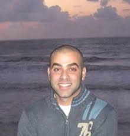
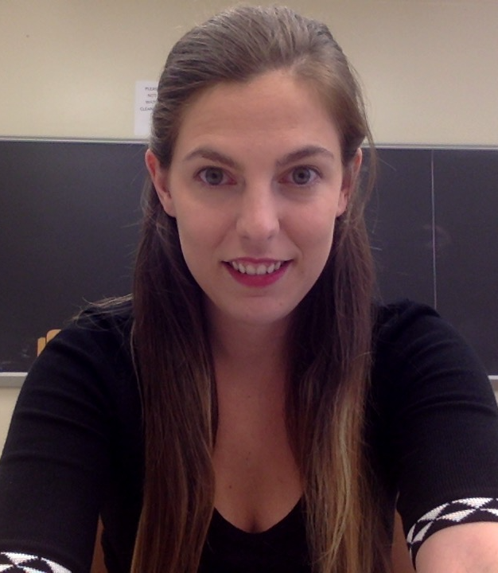
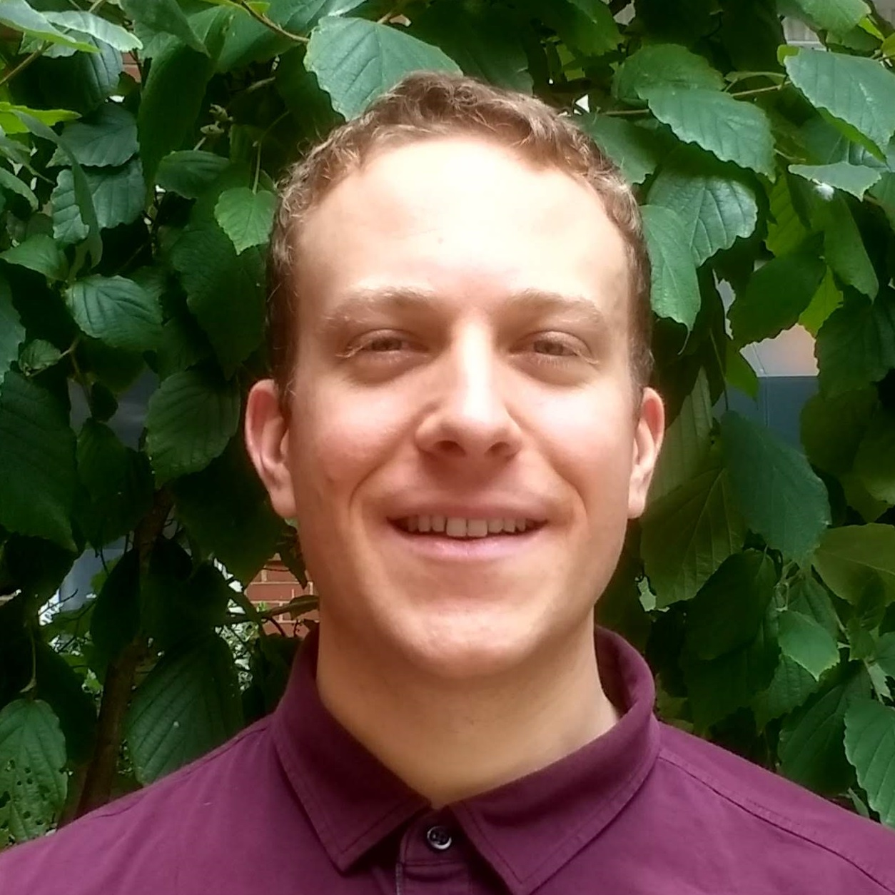

Postdocs and Fellows
Yossi Arjevani (Sept 2019 - )
Postdoc, Center for Data Science; optimization, machine learning.
Léo Miolane (Sept 2019 - )
Postdoc, Department of Mathematics and Center for Data Science; probability, statistics.
Qing Qu (Sept 2018 - )
CDS Moore-Sloan Fellow; signal processing, machine learning, optimization.
Grant Rotskoff (Sept 2017 - )
Postdoc, Courant Institute; statistical mechanics, machine learning.
Matthew Trager (Sept 2018 - )
Postdoc, Center for Data Science; algebraic geometry, deep learning.
Soledad Villar (Jun 2017 - )
Moore-Sloan Research Fellow; optimization, probability, topology and data.
Alex Wein (Sept 2018 - )
Courant Instructor; theoretical computer science, high-dimensional statistics, statistical physics of inference.
Ilias Zadik (Sept 2019 - )
CDS Moore-Sloan Fellow; high dimensional statistics, probability.